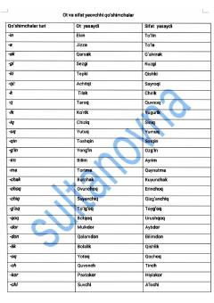

OVO'zbek tilidagi ot va sifat yasovchi qo'shimchalar omonimligini tushuntiruvchi o'quv jadvali.
Ushbu jadval o'zbek tilidagi ot va sifat yasovchi qo'shimchalarning omonimlik xususiyatlarini tushuntirib beradi. Unda turli qo'shimchalar yordamida so'z yasalishi misollar bilan aniq ko'rsatilgan.